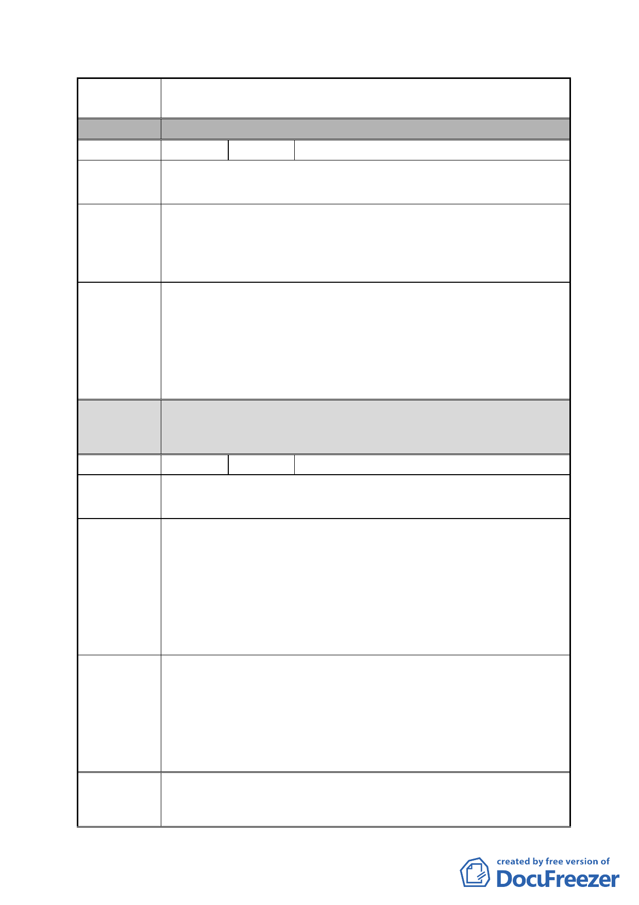

案 名 擬定臺北市南港區鐵路地下化沿線土地細部計畫案
分 區 B區
編號
3
陳情人 薛月琴
陳情地點 昆陽街以西策略型工業區
陳情理由
市府回應
說明
都委會
決議
昆陽街「住」的對面「策工」、「特商」，其「特商」僅給特許
財團，面對「策工」那住宅如何更新。
台電是工程界前輩，臺灣多少水庫、輸配電工程，那是多艱
難，所以一個小小變電站有困難，真是太丟臉了。
本案陳情地點位於地區編號 BR-3，經內政部審定之主要計畫
係以更新方式開發，並原則同意變更為商業區，惟應俟實施
者擬具更新事業計畫草案辦理公開展覽後，再報由內政部逕
予核定。另為促進該區未來開發，已於本案主要計畫劃定為
更新地區，故該地區可以自辦更新方式開發，適用都市更新
獎勵。
1.本陳情地點非屬修正後細部計畫範圍。
2.同意以市府回應說明辦理。
編號
4 陳情人 交通部臺灣鐵路管理局
陳情地點 南港區玉成段 2 小段 255-1、269-1 及 287 地號等 3 筆土地
陳情理由
建議辦法
市府回應
說明
1.經查本局南港調車場範圍內，臺北市南港區玉成段 2 小段
255-1、269-1 及 287 地號等 3 筆土地為臺北縣政府所有，坐
落於特商（B）街廓內，面積計 3,257 平方公尺，其中 255-1
及 269-1 地號等 2 筆為本局經管，另 1 筆為該府財政局經管
（如附件 1），因本局調車場已遷移，該等土地業務上已無使
用需求，爰本局應辦理撤銷撥用返還土地。
2.檢附本案地上物書圖 1 份（如附件 2）。
1.為避免將來細部計畫完成後，本局回饋用地產生爭議，建請
就 287 地號縣有土地回饋部分分開計算。
2.為本局經管及臺北縣政府所有回饋土地劃定與整體開發需
要，建請將前揭土地劃定為都市更新範圍，俾憑依據都市更
新條例第 27 條、第 28 條規定實施或參與都市更新事業，加
速土地開發，促進區域經濟發展。
1. 本府業依台鐵局建議要求新北市政府另外回饋部分交通用
地（面積約 1,253 平方公尺）予本府。相關回饋時程及細
- 18 -